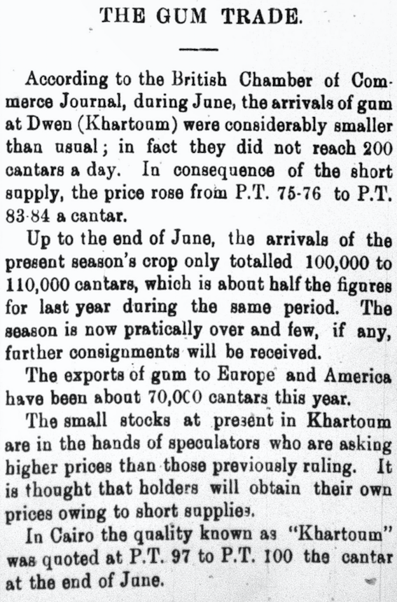
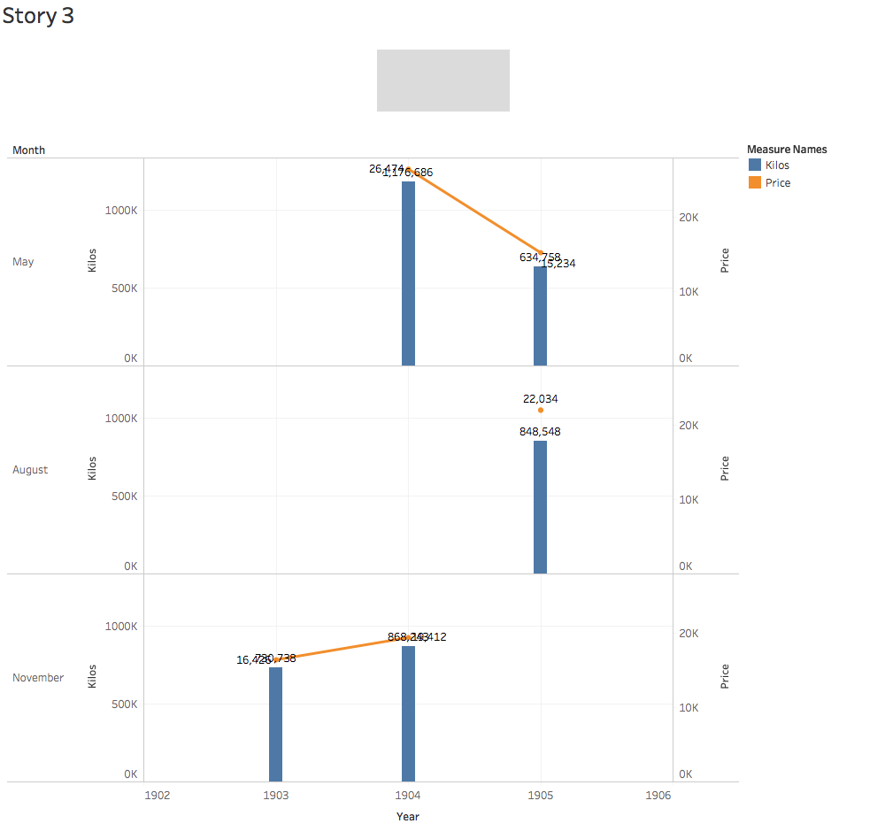

Gum in Egypt

When “Gum” was first mentioned in the Digital Egyptian Gazette, it seemed a little odd that the editors of this newspaper were talking about the amount of money that Chewing Gum brought into Egypt. Upon further research, it was discovered that gum was not actually an ingredient in making food, unlike of modern day chewing gum. After this was realized another question that was raised was, how important Gum was to the international trade of Egypt. By using the xpath Query //p[contains(.,"gum ")] it was easy to see that Gum was mentioned in the newspaper quite a lot in 1905 but not as much as in 1906. A lot of the times that gum is mentioned, it is mentioned with numbers of kilograms that was traded back and forth from mostly England, but also a lot of other various places. This is a very interesting topic because it shows the readers where gum is used and how much it is used in each country. It can also be seen in the newspaper that there was even some competition between certain companies, as well as different exports. This can also be investigated. It would be interesting to see which export was most important to Egypt, as well as how much Egypt imported each of their products. After realizing this, it was decided that this would be a good topic to research more because it could possibly be useful for discovering some secrets about cooking or taste changes. Even though this might not be the most useful, it is relatively interesting. From the data, it can be easily seen that the exports of gum increases drastically throughout the year. At one point in 1904, the exports of gum increased by over one million pounds. This is perhaps due to the fact that more and more people will want to have access to this interesting product, or maybe the fact that the word is out that Egypt's arabic gum is the best around. Another interesting point in this research that was found was that there was even gum being exported to America. Seventy cantars were exported in the year up to July in 1906.
XPath
As stated above, the query //p[contains(.,"gum ")] was used in order to find out the data needed for this analysis. This was the best query that could be used because it gave plenty of varied results from a variety of dates from 1905. If another query was used, there would not be as much useable data that would be important in finding results that could be helpful for this analysis. Other queries were attempted, but not nearly as many results came up, especially not as much useful information.
Why is this important?
The idea of researching Gum in this analysis is important to understand what certain crops and goods were used for. By looking at this, the reader of the newspaper is able to see that gum was an important part of Egypt's exports. Without this arabic gum, their trade exports would most likely be a lot less than what it was. In regards to the historical aspects of arabic gum, it is important to look at this because the basic aspects of life can be discovered and researched. This ties into the social aspects of microhistory. It is important to look at every piece of the amount of time that is being researched. The idea of looking at gum is important because people can look at what the Egyptians back then were eating, or doing with arabic gum. Arabic gum is an interesting topic because it was used for a few different things back in 1905-1906 that were very interesting and important in looking at the whole story of trade in Egypt, as well as the social aspects of life back then. Some might say that this small piece of evidence is not important at all in identifying the big picture. This may be true, but based on the fact that Egypt was a rising power, especially in the middle east, it is crucial that historians know as much as possible about what the Egyptian Government was doing. They need to know everything from how they treated their people, to what the exported and imported, and how much they made from it. It is also important to see where this product is going. From the research that was completed, it was seen that a lot of the trade was done in Africa, on the Sudan trade line, but also throughout the Mediterranean Sea, and even up in to England.
Reflections
A major portion of the data that was found by using this query was text. They were discussing the difficulties of the Gum trade, or they were speaking about competition within companies, or even just speaking about the idea of the gum trade in general. However, the data in numbers that was found was useful in determining how much of the gum was exported, when it was exported and sometimes where it was going.
Some difficulties of using digital methods to research this microhistory were the fact that some of the data pulled from the Digital Egyptian Gazette was skewed. Some of the data remained unchanged, as well as had typos that could skew the data at some points. Another difficulty was the fact that the majority of data was words, that it was tough to make a data table based on text, instead of based on numbers. Some of the data was misleading because it did not contain anything about arabic gum. There were also long gaps in the data, which either means that there is a good and a bad season for gum, or that the editor of the Digital Egyptian Gazette did not think that it was good information that the Egyptian public needed to know.
A strength in this idea is that it does give a good amount of useable data that is able to be used for this analysis. The amount of data that was useable was enough to show that gum was an important trade asset in Egypt in the early 1900s. Without the data, it would be hard to gather any useful information from this analysis project. The usefulness of the program Tableau and Excel were also very crucial in gathering and putting data into a format that is easy to view and see the importance of the gum trade.
Data Analysis

Overall, the amount of data that was gathered was small, but effective. The reason that it was effective is because the data was useful for what the objective of the analysis paper was. The main objective was to see the usefulness of arabic gum over one hundred years ago. Without this small amount of data, it would be much harder for this analysis project to be at all important or even considered good. This visual is useful because it shows the month, year, as well as price, and amount of gum that was exported from Egypt to places around the world. This visual is important to look at because it shows when the popular times for trade are. This will help historians see a glimpse of why they might have exported certain things at certain times. It will also help them in determining how much was able to be exported. Obviously, there were far different modes of transportation and different limits on exports and imports that may have dictated how much of something was exported. This could help by plugging in a small, but effective piece of the puzzle.
Summary
Overall, this analysis paper is important to the idea of encoding the microhistory of Egypt in the early 1900s. Without this information it would be difficult for people to understand why certain things were exported, and what they were used for and where they were used. Although on the surface, this topic seems obsolete, and relatively useless. However, when you dig deeper, it can be seen that this information is crucial to the whole picture of history. We would not be able to understand why these Egyptians bought and sold arabic gum, or why they could only sell a certain amount of it. We can see from this that there was a lot of competition for resources and consumer base, just as there is today. This information shows us that people back then knew what we know now. We can see that some modern ideas about market prices, market fragments, market structure and even market competition come from ideas that the people had to use hundreds of years ago.
We are required to look into the past to be able to see the future. If we do not understand why our ancestors did what they did, then we would not know what to do in the modern day. Without these ideas from the past about imports and exports, we would not know as much as we do today about this topic.
Justin Petersen
Student
The author, a student at Florida State University, was enrolled in the digital microhistory lab in spring 2017.